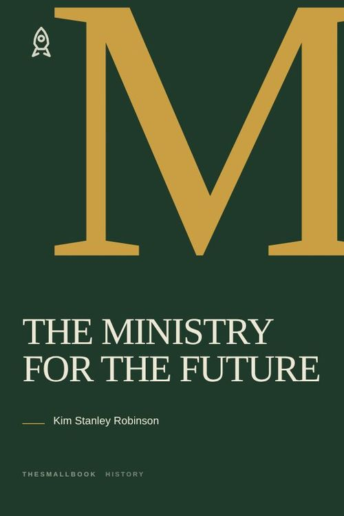

Library › Authors › Kim Stanley Robinson
Books by Kim Stanley Robinson
Kim Stanley Robinson has one book in the library. Every book here is read down to the big idea, the lessons, the lines worth keeping and the actions worth taking. Start with the summary, then buy the full book if it earns a place on your shelf.

The Ministry for the Future
2020 · 11 min · 8 lessons
Kim Stanley Robinson imagines a near future ministry, a central bank and a carbon coin holding the world to a target it keeps promising to miss.
The novel is an argument in narrative form. Robinson shows that the technical solutions to warming mostly exist and that the obstacle is political, financial and emotional. The Ministry for the Future is based because it outlasts governments, and the carbon coin works because it makes carbon reduction profitable rather than virtuous. Fiction lets him hold the horror and the possibility at once.
Lessons in the summary
- The Heat Comes First
- An Institution, Not a Campaign
- The Carbon Coin
- The Market as a Tool
- Finance and the Long Now
- Technology Is Not the Bottleneck
- Grief and Action
- What a Changed World Looks Like
Lines worth keeping
- An institution that outlasts its governments can outlast the excuses.
- Make the right thing profitable and it stops needing heroism.
- The dead are not a market signal. That is the whole problem.
Questions Kim Stanley Robinson helps answer
Read nearby authors next
- Bill Bryson 2 books
- David Grann 2 books
- Isabel Wilkerson 2 books
- Ramachandra Guha 2 books
- Siddhartha Mukherjee 2 books
- Walter Isaacson 2 books
- William Dalrymple 2 books
- A.L. Basham 1 book